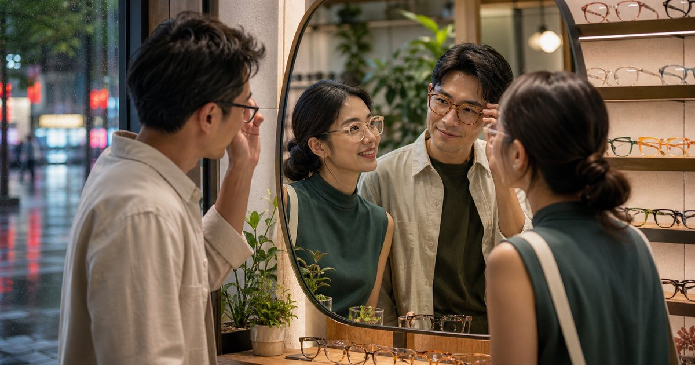

一人生活的每週日常清單：高效但有溫度的形象、居家與時間管理實作
給剛開始一個人生活的高管女性，一份不逼迫慢下來、先找回掌控感的每週實作清單。從衣櫥到會議、從家門到出差包，用最低決策成本重建專業形象與居家節奏。

先設定一週的決策底盤：把力氣留給真正重要的事
一個人的日常裡，最耗損的不是工作量，而是那些微小但必須做的決定。今天穿什麼、晚餐吃什麼、要不要去健身房、這個週末該怎麼安排——這些看似簡單的選項，累積起來會吃掉大量的認知資源。
對剛恢復一個人的女高管來說，第一要務不是把日子過得精彩，而是先把基本節奏固定下來。我們建議的做法是：在週日晚上花 30 分鐘，為下一週設定好 5 個固定的「底盤決策」，包含：一週的穿搭組合、三個晚上的主食選項、兩個一定會執行的運動時段、一個固定的家務處理時段，以及一個完全空下來留給自己的區塊。
這個設計的邏輯，不是限制生活，而是釋放腦力。當妳不需要每天站在衣櫃前猶豫，妳才能把清晰的判斷力留給會議、談判、客戶關係這些真正需要妳的地方。
- 週日晚上 30 分鐘設定下週底盤決策
- 穿搭組合預先規劃，而非每天早上即興決定
- 主食選項保留三種，降低晚餐決策成本
- 運動與家務時段固定化，轉為自動執行程式
週間形象管理：用 10 件單品穿出一週的專業感
一個人的職場形象，不再是為了誰打扮，而是為了自己站在會議室裡的底氣。但在時間有限、精神有限的前提下，我們需要一套極簡但精準的衣櫥系統。
這裡設計的是一組「10 件膠囊衣櫥」，專門為台灣商務場景與週間行程配置：一件有結構的西裝外套、兩件不同領型的絲質或針織上衣、一條直筒九分西褲、一條及膝窄裙、一件可用於會議也可用於晚餐的真絲襯衫、一雙低跟尖頭鞋、一雙平底樂福鞋、一個容量足夠裝文件的托特包，再加上一件輕量風衣作為轉季機動單品。
這 10 件單品的組合，可以混搭出至少 6 到 7 套不同的週間造型，涵蓋內部會議、外部提案、客戶午餐、甚至臨時的晚間社交場合。關鍵在於色系必須互相相容——建議以海軍藍、象牙白、卡其與深灰為基礎，再加入一件妳偏愛的點綴色，讓整體看起來有意識、有態度，卻不需要每天重新思考。
形象不只是視覺，也包括氣味與整潔。一個人住，沒有人提醒妳外套該乾洗了，也沒有人會順手幫妳把鞋子擦乾淨。週三晚上，可以是妳的「形象維護時段」：檢查本週穿過的衣服是否需要送洗、用 10 分鐘整理包包內部、確認皮鞋狀態，這些小動作會讓妳在接下來每一場會議裡都更有安全感。
- 10 件單品建構週間膠囊衣櫥，以相容色系為基礎
- 涵蓋商務會議、提案、客戶午餐與臨時社交場合
- 週三晚上設定為形象維護時段：衣物狀態檢查、包包整理、鞋履保養
- 色系建議：海軍藍、象牙白、卡其、深灰，加上一個個人點綴色
出差輕量化：一個登機箱能裝下的三天商務行程
對需要頻繁往返台北、新竹、台中，或短期飛往東京、上海、新加坡的女高管來說，一個人打包的標準不再是「帶齊全」，而是「帶剛好」。拖著沉重的行李箱在車站或機場移動，只會消耗已經緊繃的精神。
三天兩夜的商務出差，目標是只帶一個登機箱與一個隨身手提包就上車。打包邏輯從「以防萬一」改成「一物多用」：一套在飯店可手洗、快乾的發熱衣或絲質內搭，一件可折疊不皺的西裝外套，一條可正式可休閒的深色長褲，一件可單穿也可當外套的針織上衣，加上一雙白天會議、晚上用餐都能穿的黑色跟鞋或踝靴。
化妝包也應該精簡成「五分鐘完妝」組合：防曬潤色隔離、雙色眼影盤、睫毛膏、眉筆、口紅、迷你蜜粉，全部裝進一個防水小袋。這個組合不只是為了省空間，更是為了在飯店早晨趕會議時，不需要在鏡子前站太久，就能有氣色、有精神地出門。
另一個常被忽略的細節是飯店「入住後 10 分鐘」。進門後立刻把衣服掛起來通風、將充電器與檔案攤開在桌上設定工作區、把睡衣與隔天衣物預先擺好——這 10 分鐘的儀式感，會讓一個人的商務夜不再空蕩，而是有節奏地進入工作與休息的轉換。
- 三天出差只帶一個登機箱，打包邏輯從一物多用出發
- 精簡化妝包：五分鐘完妝，減輕早晨決策負擔
- 入住後 10 分鐘儀式：掛衣服、設工作區、預放隔天衣物
- 適合高鐵商務行與亞洲短程飛行場景
回到家的第一個小時：夜間恢復儀式取代滑手機的空洞感
婚姻裡，晚上回到家可能有人對話、有人分擔；一個人之後，開門迎接妳的往往是一片安靜。很多高管女性在這個時刻會不自覺地滑手機、開電視、喝一杯，試圖填補那個空缺，但這些行為通常只會讓隔天更累。
我們建議重新設計「回到家的第一個小時」，把它從一個情緒空窗期，轉換成一個有意識的恢復儀式。這個小時可以拆成三個 20 分鐘段落：
第一個 20 分鐘是物理轉換。進門先換下外出服，用溫水洗手洗臉，把包包裡的東西歸位，點一盞只有這個時間才會開的桌燈或蠟燭。這些動作不用思考，但它們會告訴大腦：工作模式結束了。
第二個 20 分鐘是身體恢復。不一定要劇烈運動，可以是簡單的伸展、用滾筒放鬆肩頸、或是穿上舒適的家居鞋，泡一杯不含咖啡因的茶。如果白天久坐，這個時段的輕度活動對睡眠品質幫助很大。
第三個 20 分鐘是心理收束。妳可以寫下三行今天發生的事、確認明天最重要的三個任務、或者打開一本不需要趕進度的書。這個動作的重點不是內容本身，而是把腦中紛亂的思緒轉化成可見的文字，讓自己感覺到「今天已經處理完了」。
- 回家後第一個小時拆成三個 20 分鐘段落
- 物理轉換：換裝、洗手、點燈，建立模式切換訊號
- 身體恢復：伸展、滾筒放鬆、無咖啡因熱飲
- 心理收束：三行日記、明日三任務、無壓力閱讀
一個人也能建立的信任名單：委外不是示弱，是策略
在職場上，妳很清楚哪些事該授權、哪些人該信任。但回到一個人的日常生活，很多女高管反而開始什麼都自己扛：從修水電、整理帳單到研究家電耗材，全部攬在身上。這不是獨立，這是把自己變成瓶頸。
我們鼓勵妳為自己的生活建立一張「信任名單」，就像妳在職場上建立的供應商清單一樣。這份名單應該包含：一位可靠的清潔人員、一位可以信任的乾洗店或修改師、一位水電師傅、一位能定期整理財務與帳單的幫手（可以是熟悉稅務的朋友或專業會計師）、以及至少一位可以在深夜或生病時接電話的朋友。
建立這份名單不需要一次到位，可以每週新增一位聯繫人。重點是當狀況發生時，妳不是從零開始找人，而是打開手機聯絡人就知道應該打給誰。對剛開始一個人生活的女性來說，這份名單比任何勵志語錄都更實際、更能帶來安全感。
- 為生活建立信任名單：清潔、乾洗、水電、財務、緊急聯絡人
- 每週新增一位，逐步建立日常支持系統
- 把職場授權思維帶回日常生活，減少一人承擔所有事務的壓力
FAQ
一個人生活最難的不是孤單，而是什麼？
對很多剛恢復一個人的女高管來說，最難的不是孤單，而是決策疲勞。過去生活中許多微小決定有人分擔或討論，現在全部回到自己身上，從晚餐內容、週末行程到家電維修都需要獨自判斷。這種持續的決策消耗，往往比情緒更讓人疲倦。建議先把關鍵的週間決策標準化，例如固定穿搭組合、主食選項與運動時段，把認知資源留給真正需要專注的工作與人生選擇。
膠囊衣櫥適合台灣潮濕氣候嗎？
適合，但需要挑對材質。台灣高溫潮濕，膠囊衣櫥建議以天然透氣材質為主，例如絲、棉麻、輕量羊毛與機能性混紡單品。重點是少量但高品質，確保每一件都可以頻繁穿著且容易照顧。避免厚重毛呢或多層次疊穿，選擇可手洗或快乾的品項更適合台灣氣候與一個人的生活方式。
剛開始一個人住，如何克服晚上回到家的空蕩感？
空蕩感往往來自於進門後缺乏一個明確的轉換儀式。建議設計一個固定的「回家後第一個小時」流程：先換下外出服、用溫水洗手洗臉，點一盞燈或蠟燭作為模式切換信號，接著做簡單的伸展或泡杯茶，最後用幾行文字為今天收尾。這個流程的目的不是要填滿時間，而是讓大腦清楚知道：工作結束了，現在進入恢復模式。
什麼是信任名單？為什麼一個人生活需要它？
信任名單是一份為個人生活建立的專業聯繫人清單，概念類似職場上的供應商或授權對象名單。內容包含清潔人員、乾洗店、水電師傅、財務幫手與緊急聯絡人等。對一個人的生活來說，這份名單可以避免在突發狀況時從零開始找人，減少獨自承擔所有事務的壓力，是一種把職場管理思維帶回日常的策略。
下一步建議
從日常清單到空間設計，我們為正在重建生活秩序的女性整理了一系列實作文章。查看完整系列，找到適合妳的下一步。
重要警語
本文為一般健康、運動、飲食、照護、情緒或生活資訊整理，不構成醫療診斷、治療、用藥、營養、心理諮商或個人化訓練建議。若有症狀、慢性病、懷孕、用藥、受傷、睡眠或情緒困擾，請先諮詢合格醫療或相關專業人員，並依自身狀況調整。